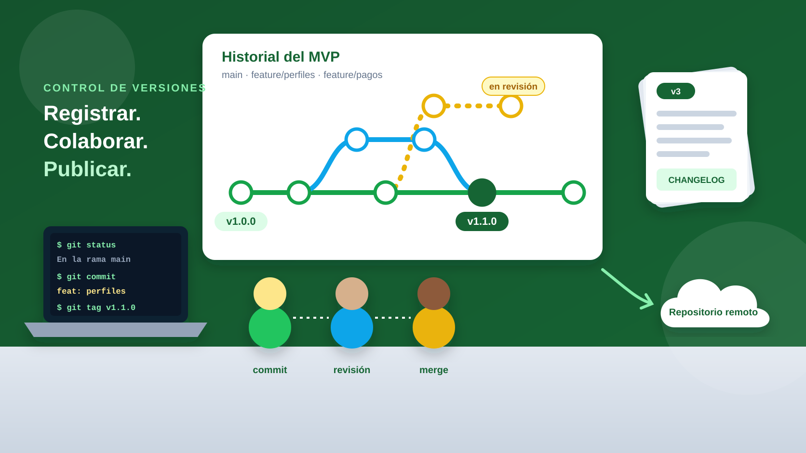
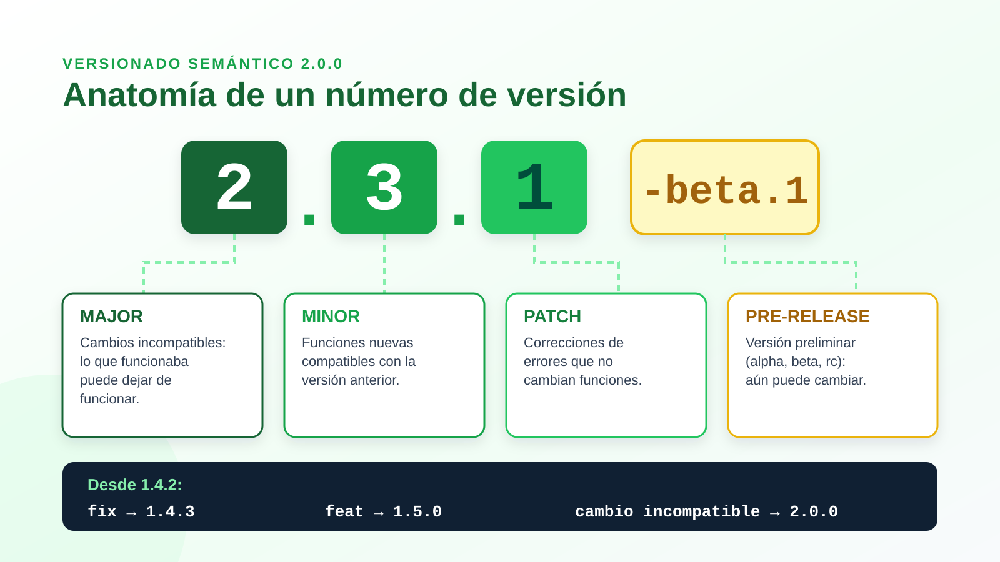

Control y generación de versiones
Registra cada cambio de tu MVP, trabaja en equipo sin perder información y publica versiones claras y confiables. 🗂️
Mientras un MVP se valida, cambia constantemente: se corrigen errores, se agregan funciones y se descartan ideas. Sin un control de versiones, el equipo termina con archivos como «final», «final2» y «final_ahora_si», sin saber cuál funciona ni quién cambió qué.
El control de versiones es la práctica de registrar de forma ordenada la historia de un proyecto. Herramientas como Git permiten guardar instantáneas del trabajo, crear ramas para experimentar sin dañar lo que funciona, combinar el trabajo de varias personas y volver atrás cuando algo falla.
La generación de versiones complementa esa práctica: asigna números con significado (como 1.4.2), documenta los cambios en un registro y prepara lanzamientos que los usuarios y el equipo pueden entender.
Objetivos de Aprendizaje
- 🗂️
Comprender qué es el control de versiones y por qué es esencial en el desarrollo de un MVP.
- 💻
Identificar los conceptos y comandos básicos de Git: repositorio, commit, rama, fusión y etiqueta.
- 🌿
Comparar flujos de trabajo con ramas para colaborar en equipo de forma ordenada.
- 🏷️
Aplicar el versionado semántico y redactar mensajes de commit y registros de cambios claros.
- 🛡️
Reconocer buenas prácticas de seguridad, respaldo y trazabilidad del trabajo digital.
El control de versiones convierte el trabajo del equipo en una línea de tiempo: quién cambió qué, cuándo y por qué. Así es posible experimentar con confianza y volver a una versión estable cuando sea necesario.
Haz clic en la imagen para ampliarla.

Mapa mental del temaSelecciona cada rama para descubrir sus ideas clave.
Tema centralControl y generación de versiones
Registrar, colaborar y publicar con orden.
Recorrido de un cambio en GitPasa el cursor o toca cada etapa para ver qué ocurre y qué comando se usa.
Simulador: la historia de una versiónAvanza paso a paso y observa cómo crece el historial del proyecto.
Desliza el gráfico horizontalmente para verlo completo.
1
Terminal de prácticaSelecciona un comando para ver una salida de ejemplo y para qué sirve.
| Comando | ¿Para qué sirve? | Momento de uso |
|---|---|---|
| git init / git clone | Crear un repositorio nuevo o copiar uno existente. | Inicio del proyecto |
| git status | Ver la rama actual y los archivos modificados. | Antes de cada commit |
| git add | Preparar los cambios para el siguiente commit. | Al terminar una tarea |
| git commit -m | Guardar una instantánea con un mensaje descriptivo. | Cada avance coherente |
| git switch -c | Crear una rama y cambiarse a ella. | Nueva función o experimento |
| git merge | Integrar una rama en otra. | Tras revisar el trabajo |
| git push / git pull | Enviar o traer cambios del repositorio remoto. | Al compartir y sincronizar |
| git tag | Marcar un commit como versión publicada. | Al lanzar una versión |
| git revert | Deshacer un commit sin borrar el historial. | Cuando una versión falla |
En móvil, puedes deslizar esta tabla horizontalmente.
Calculadora de versionado semánticoLa versión actual del MVP es 1.4.2. Elige el tipo de cambio que vas a publicar.
1Major
.4Minor
.2Patch
-beta.1Pre-release
Selecciona un tipo de cambio
Cada parte del número comunica algo distinto a quienes usan tu producto.
Un número como 2.3.1-beta.1 resume la historia del producto: cuántos cambios incompatibles ha tenido, cuántas funciones se han sumado, cuántas correcciones lleva y si aún está en prueba.
Haz clic en la infografía para ampliarla.

Antes de llegar a la 1.0.0, un producto digital pasa por etapas en las que se abre gradualmente a más usuarios. Cada etapa tiene un propósito distinto de validación.
Prototipo · 0.x
Versión de desarrollo inicial. Todo puede cambiar; se usa para validar con pocos usuarios.
Alfa
Funciones principales en prueba interna. Se esperan errores; la prueba la hace el equipo.
Beta
Usuarios reales prueban la versión casi completa y reportan problemas y mejoras.
Release candidate
Candidata a versión final. Solo se corrigen errores críticos; no se agregan funciones.
Estable · 1.0.0
Primera versión pública confiable. Desde aquí, SemVer guía cada cambio.
Flujos de trabajo con ramasCompara tres estrategias y elige la que mejor se adapta a tu equipo.
¿Cómo funciona?
Existe una rama principal siempre lista para publicar. Cada cambio se hace en una rama corta, se propone con un pull request, se revisa y se fusiona en main.
¿Cuándo conviene?
Equipos pequeños que publican con frecuencia, como un equipo que itera su MVP cada semana. Es el flujo más sencillo para empezar.
¿Cómo funciona?
Usa una rama main para versiones publicadas y una rama develop para integrar trabajo. Añade ramas específicas para funciones (feature), preparación de lanzamientos (release) y correcciones urgentes (hotfix).
¿Cuándo conviene?
Productos con lanzamientos planificados y varias versiones en mantenimiento al mismo tiempo. Para un MVP suele resultar más complejo de lo necesario.
¿Cómo funciona?
Todo el equipo integra cambios pequeños en la rama principal (el tronco) al menos una vez al día. Las funciones incompletas se ocultan con interruptores de funcionalidad.
¿Cuándo conviene?
Equipos con pruebas automatizadas e integración continua. Reduce los conflictos grandes, pero exige disciplina y revisiones rápidas.
Mensajes de commit que se entiendenCompara un historial confuso con uno que sigue la convención Conventional Commits.
git log --oneline
a91f2c0 cambios77be310 arreglos varios0c4d9e2 ahora sí funciona5e2a118 final final¿Qué problema hay?
- Nadie sabe qué cambió en cada commit.
- Es imposible encontrar cuándo apareció un error.
- No se puede generar un registro de cambios.
- No indica si el cambio afecta la versión.
git log --oneline
3f2a91c feat: agrega perfil del tutor9b1e004 fix: corrige validación de correoc81d0f7 docs: explica instalación en README51c7d2a feat!: cambia el formato de la API de reservas¿Por qué funciona?
- El tipo (feat, fix, docs) clasifica el cambio.
- La descripción es breve y en modo imperativo.
- feat sugiere MINOR, fix sugiere PATCH y ! indica cambio incompatible (MAJOR).
- Permite generar el changelog automáticamente.
| Tipo | Uso | Ejemplo | Efecto en la versión |
|---|---|---|---|
| feat | Nueva funcionalidad | feat: agrega filtro por materia | MINOR |
| fix | Corrección de un error | fix: evita reservas duplicadas | PATCH |
| docs | Cambios en documentación | docs: actualiza guía de uso | Ninguno |
| style | Formato sin cambiar lógica | style: ordena estilos del menú | Ninguno |
| refactor | Mejora interna del código | refactor: separa módulo de pagos | Ninguno |
| test | Pruebas automatizadas | test: cubre registro de usuarios | Ninguno |
| feat! | Cambio incompatible | feat!: elimina el inicio de sesión antiguo | MAJOR |
En móvil, puedes deslizar esta tabla horizontalmente.
Versionar más que códigoEn un emprendimiento digital, todos los activos del proyecto evolucionan.
🎨 Diseños y prototipos
Figma y Penpot guardan un historial de versiones. Nombra los hitos («v2 – flujo con perfiles») para comparar qué cambió tras cada prueba.
📄 Documentos y pitch deck
Google Docs y Microsoft 365 registran cambios automáticamente. Usa nombres con fecha y versión: «pitch_v1.2_2026-10-20».
📊 Evidencia de validación
Guarda las tarjetas de prueba y resultados asociados a cada versión del MVP. Así sabrás qué versión produjo cada dato.
💾 Copias de seguridad 3-2-1
Tres copias de la información, en dos medios distintos y una de ellas fuera del lugar de trabajo (por ejemplo, en la nube).
Buenas prácticasHábitos que mantienen el historial limpio, seguro y útil.
ProfundizaDespliega cada tema para ampliar la información.
Un changelog es un archivo escrito para personas, no para máquinas. Lista las versiones de la más reciente a la más antigua, con su fecha, y agrupa los cambios por tipo: Agregado, Cambiado, Obsoleto, Eliminado, Corregido y Seguridad.
## [1.1.0] - 2026-10-26 ### Agregado - Perfil del tutor con materias y horarios. ### Corregido - Validación del correo institucional al registrarse. ## [1.0.0] - 2026-10-05 ### Agregado - Reserva de tutorías en 3 pasos.
Ocurre cuando dos ramas modifican la misma parte de un archivo y Git no puede decidir cuál conservar. Git marca el archivo con las dos versiones para que el equipo elija.
1
Identifica los archivos en conflicto con git status.
2
Abre el archivo y busca las marcas <<<<<<<, ======= y >>>>>>>.
3
Conversa con quien hizo el otro cambio y deja la versión correcta, eliminando las marcas.
4
Confirma la resolución con git add y git commit.
Git es la herramienta de control de versiones que se instala en el computador y funciona sin internet. GitHub y GitLab son plataformas en línea que alojan repositorios Git y agregan funciones de colaboración: pull requests (o merge requests), gestión de tareas, revisión de código, automatización y publicación de lanzamientos.
Cada prueba con usuarios debe asociarse a una versión concreta del MVP. Si la versión 0.3.0 obtuvo que 4 de 6 usuarios completaron la reserva y la 0.4.0 subió a 6 de 6, el historial permite saber exactamente qué cambio produjo la mejora. Sin versiones, la evidencia pierde contexto y el aprendizaje se diluye.
Caso para analizar
Un día antes de la demostración, la nueva versión del MVP falla y el equipo necesita mostrar la versión anterior que funcionaba. ¿Qué es lo más adecuado?
Reflexión
Cuestionarios o actividades complementarias
Resuelve las actividades para aplicar lo aprendido sobre control y generación de versiones. ✍️
Actividad 1. Conceptos de Git
Relaciona cada situación con el concepto adecuado.
Correctas: 0/2
Quieres probar una nueva función sin afectar la versión que ya funciona. ¿Qué haces?
¿Qué hace el comando git commit?
Actividad 2. Versionado semántico
Decide el número de la siguiente versión.
Correctas: 0/2
Tu MVP está en la versión 2.3.1 y corriges un error de cálculo sin cambiar funciones. ¿Cuál es la nueva versión?
Desde la versión 2.3.2 agregas la opción de calificar tutorías, sin afectar lo existente. ¿Cuál es la nueva versión?
Actividad 3. Colaboración y buenas prácticas
Elige la práctica más adecuada para el equipo.
Correctas: 0/2
¿Cuál es el mejor mensaje de commit?
Un integrante subió por error la clave de acceso a la base de datos al repositorio. ¿Qué debe hacer el equipo?
Evaluación
Responde el quiz de verificación y comprueba qué tan sólido quedó tu aprendizaje.
1. El control de versiones es:
2. Git es un sistema de control de versiones distribuido porque:
3. Según el versionado semántico, si la versión 1.8.3 introduce un cambio incompatible, la nueva versión es:
4. En GitHub Flow, antes de fusionar una rama con main se recomienda:
5. El archivo CHANGELOG.md sirve para:
Recursos para profundizar
Consulta estos recursos para ampliar el tema y apoyar el desarrollo del proyecto. Puedes escanear cada código QR desde tu celular.
-
Pro Git (libro en español)
Libro gratuito y oficial de Git: desde lo básico hasta ramas y trabajo remoto.
Ir al recurso -
Versionado semántico 2.0.0
Especificación oficial en español de la numeración MAJOR.MINOR.PATCH.
Ir al recurso -
Conventional Commits 1.0.0
Convención para escribir mensajes de commit claros y estructurados.
Ir al recurso -
Mantenga un changelog
Guía para documentar los cambios de cada versión de forma legible.
Ir al recurso
Bibliografía
https://www.atlassian.com/git/tutorials/comparing-workflows
https://git-scm.com/book/es/v2
https://www.conventionalcommits.org/es/v1.0.0/
https://help.figma.com/hc/en-us/articles/360038006754-View-a-file-s-version-history
https://docs.github.com/es/get-started/using-git/about-git
https://docs.github.com/es/pull-requests/collaborating-with-pull-requests/proposing-changes-to-your-work-with-pull-requests/about-pull-requests
https://keepachangelog.com/es-ES/1.1.0/
https://semver.org/lang/es/
https://trunkbaseddevelopment.com/
Creado por:
Centro de Innovación en TIC para el apoyo de la Docencia CINTIA
Universidad de Córdoba